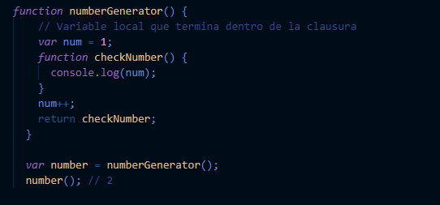
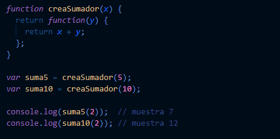
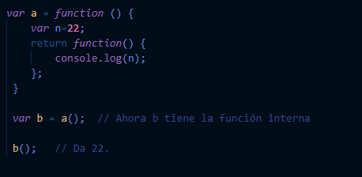

Funciones del objeto Math
Los “closures” son funciones que se refieren a variables independientes. Pueden considerarse un tipo especial de objeto,
que incluye una función y el entorno (o variables) en el que se creó esa función. Los closures almacenan el ambiente en el que fueron creados.
Tambien se puede definir como:
- Una clausura son las variables locales de una función - mantenidas vivas después de que la función haya retornado
- Una estructura de pila que no se desasigna cuando la función retorna (como si una estructura de pila se asignara en lugar de permanecer en la pila principal).
Ejemplo 1:
Ejemplo 2:
Ejemplo 3:
Los closures son funciones que llevan datos asociados, relativos al momento en que fueron invocadas.
La existencia de closures aporta ventajas a la programación con JavaScript, ya que podemos usarlos para resolver necesidades que nos surjan. Pero también genera problemas: a veces se generan closures sin querer con efectos indeseados. O a veces se crea un excesivo número de closures innecesariamente, consumiendo recursos y haciendo más lenta la ejecución del código.
Los closures son una parte de la programación JavaScript que no es fácil de explicar ni de entender. Esto podemos extenderlo en general a “los ámbitos” y a la palabra clave this. No te preocupes si te has perdido en algunas partes de las explicaciones que hemos dado. Sigue avanzando con el curso y trata de ir adquiriendo destreza en la interpretación y uso de closures a medida que sigas programando JavaScript.